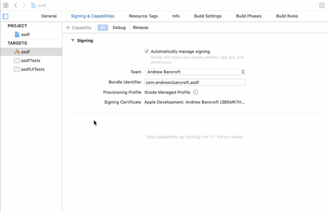
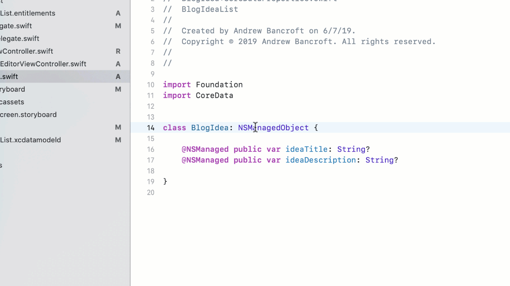
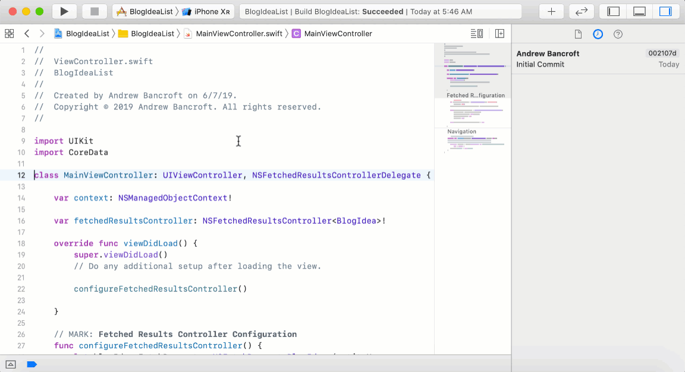
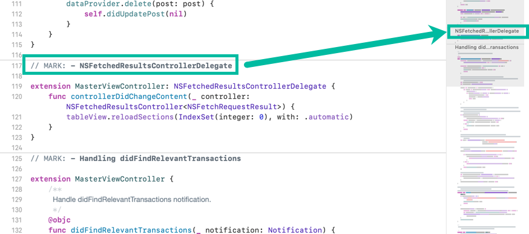
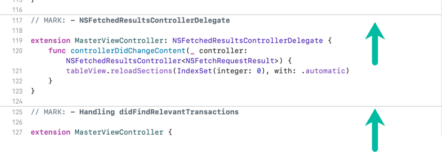
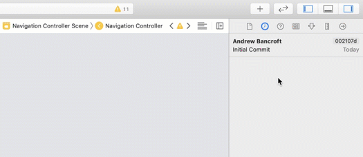
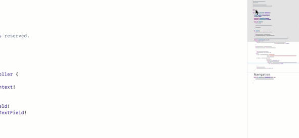

I am the author of iOS 17 Fundamentals, Building iOS User Interfaces with SwiftUI, and eight other courses on Pluralsight.
Deepen your understanding by watching!
New Delights With Xcode 11
Xcode 11 has a few new shinies that are delightful (to me). This running list is here for you to notice and (hopefully) enjoy as well.
Capabilities Search
In your project settings, you can search for capabilities you want to add (instead of scrolling down the list and turning things “on” or “off”).

Editor Quick Actions
Holding the command key down while mousing over and clicking on various levels of your code presents a quick action pop-out. Handy! Xcode 10 had some of these as well, but Xcode 11 adds additional actions in additional areas.

Jump to Code from Minimap
The minimap in and of itself is nice, but I found the “jump to code” features smart and convenient.

Marks in the Minimap
Have you noticed that // Mark: produces “header”-like text in the minimap?

// Mark: also produces a thin line break in your code - I think it definitely helps spot divisions in your code and could help find what you want a little quicker.

History Inspector (source control history)
There’s a little source control icon in the Inspectors pane that lets you quickly see commit history and perform quick actions.

Tooltip From Minimap
If you move your mouse over the minimap, Xcode will display little tooltips out to the left that correspond to major sections of your code, such as the class/struct declaration, properties, and functions.

comments powered by Disqus